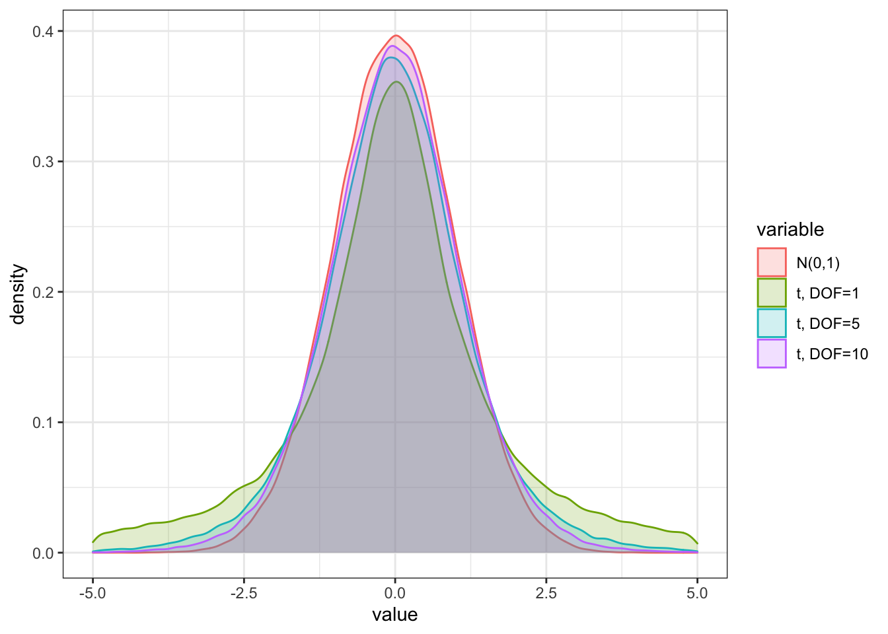
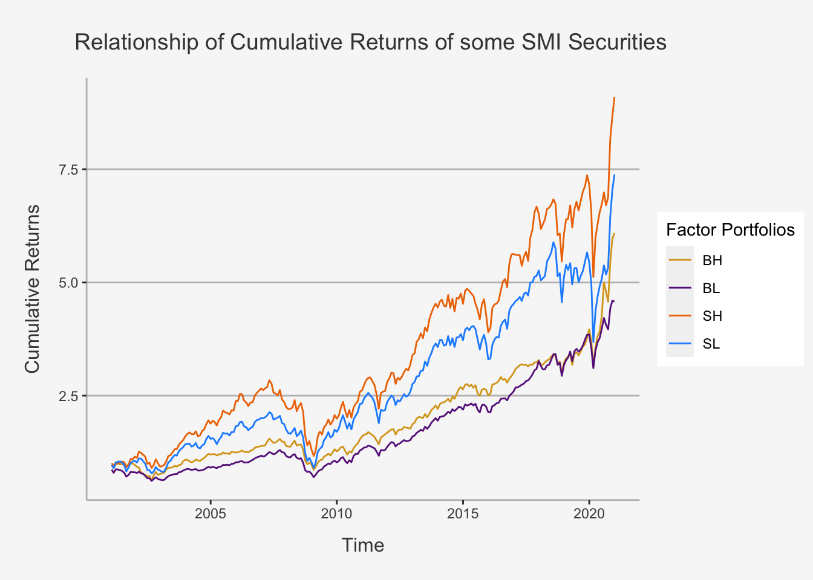

Chapter 3 Statistical Properties
The first topic covers mathematical and statistical properties that most modern finance is built upon. These properties serve as cornerstones required to comprehend the foundations of financial economics, risk management as well as asset management. ALthough widely used in many areas, their comprehension is key in identifying and retracing financial concepts in any of the afore-mentioned areas.
In this chapter, we will cover the mathematical foundations and statistical properties that are often used within empirical finance contexts. Based upon the topics taught in Statistics and Mathematics courses as well as Empirical Methods, we will cover properties related to \(\textbf{Probability Theory}\) and \(\textbf{Matrix Algebra}\).
This section should serve as a repetition to the topics already discusses in Empirical Methods and as such students should at least be familiar with the subjects at hand. However, as the course will rely substantially on these properties, a coherent discussion of them is a necessary prerequisite to be able to expect the baselines of empirical finance.
3.1 Random Variables and Probability Distributions: Introdcution
In this chapter, we will repeat the fundamentals of probability as well as probability distributions. We dive into what random variables are, how they are used in financial applications, how they can be related to probability measures, such as distributions, what the distributions tell us, how they can be related to financial concepts and how they can be calculated using R.
The chapter is outlined as follows: Section 1 introduces the concept of random variables within a countable space. Next, in Section 2, we look at discrete probability distributions, such as Bernoulli, Poisson or Mutlinomials. In Section 3 we look at continuous probability distributions, before we dive into continuous distributions with appealing properties, such as normal or log-normal distributions. Lastly, we will look at continuous functions that can deal with extreme events.
3.1.1 The concept of Probability: Important Notions and Definitions
To understand the concept of random variables more thoroughly, we need to define some concepts first. The concepts we discuss are .
For that, let’s use a dice throwing example. A dice can take up six values when being rolled, ranging from 1 to 6, with, theoretical, probability of 1/6 for each outcome.
3.1.1.1 Outcomes, Spaces and Events, Measurable and Immeasurable Spaces
\(\textbf{Definition 2.1: Outcome}\)
Outcomes are just all possible, or feasible, values that a certain experiment can render. It is denoted by \(\omega\). In the case of throwing a dice, this is just all numbers that the dice can show, e.g. 1 to 6. We write this accordingly as:
\[ \omega_1 = 1, \omega_2 = 2, \omega_3 = 3, \omega_4 = 4, \omega_5 = 5, \omega_6 = 6 \]
\(\textbf{Definition 2.2: Space}\)
The set of all feasible outcomes is called space. It is denoted by \(\Omega\). In a dice experiment, this is just all values of \(\omega\) defined previously. We write this as:
\[ \Omega = [\omega_1, \omega_2, \omega_3, \omega_4, \omega_5, \omega_6] \]
Each Space \(\Omega\) can be distributed into certain parts. For instance, in the dice example we can be interested in whether the rolled number is odd or even, defining a set of either all odd or all even numbers.
In general, the \(2^\Omega\) comprises of all possible subsets of a space \(\Omega\), including the \(\emptyset\) and the space set \(\Omega\). With the aid of this power set, we are able to describe .
Another neat property of the power set is that it includes each union of arbitrarily many events as well as any intersection of arbitrarily many events. The power set also contains the complements to all events.
$ \(\sigma\)-$
The \(\sigma\)-algebra, denoted as \(\mathbb{A}\), is the collection of events that are subsets of \(\Omega\) with the following properties:
\[ \text{(I) } \Omega \in \mathbb{A} \text{ and } \emptyset \in \mathbb{A}\\ \text{(II) }\text{if event } E \in \mathbb{A} \text{ then }\hat{E} \in \mathbb{A} \\ \text{(III) }\text{If the countable sequence of events } E_1, \dots, E_n \in \mathbb{A}, \text{ then } \cup^\infty_{i=1}E_i \in \mathbb{A} \text{ and } \cap^\infty_{i=1}E_i \in \mathbb{A} \]
Which defines that (I) both the space and the empty set, (II) the complements of any event and (III) both the intersection as well as the union of any event(s) are included.
In the case of the dice rolling experiment, this would include all potential values as well as their intersections, combinations and complements.
\(\sigma\)-
The Borel \(\sigma\)-algebra is mostly used in uncountable spaces. That is, where \(\Omega\) is no longer finite, or countable, implying we have uncountably many potential outcomes. Suppose that we are analyzing the daily logarithmic returns for a common stock or common stock index. Theoretically, any real number is a feasible outcome for a particular day’s return, although we might expect some capping above and below certain values. So, events are characterized by singular values as well as closed or open intervals, such as being interested if the return is at least 10 percent, and each potential outcome in the real space.
To design our set of events of the uncountable space \(\Omega\), we take the following approach.
We first (I) include “any real number,” which is the space itself, \(\Omega\), as well as the empty space \(\emptyset\). Next, one includes (II) all events of the form “less than or equal to a”, for any real number a. Accordingly, we consider all possible half-open intervals given by \((-\infty, a]\) for any a \(\in \mathbb{R}\). For each of these half-open intervals, we then add (III) its complement \((a, \infty)\) which expresses the event “greater than a.” Lastly, we include (IV) all possible unions and intersections of everything already in the set of events as well as (V) of the resulting unions and intersections themselves.
IN total, the Borel \(\sigma\)-algebra consists of all these sets, intersections, unions and complements for an immeasurable space. It is denoted by \(\mathbb{B}\).
3.1.1.2 Probability Measure
There are some formal definitions a probability measure needs to satisfy:
: A probability measure should assign each event E from our \(\sigma\)-algebra a nonnegative value corresponding to the chance of this event occurring.\ : The chance that the empty set occurs should be zero since, by definition, it is the improbable event of “no value.”\ : The event that “any value” might occur (i.e., 1) should be 1 or, equivalently, 100% since some outcome has to be observable.\ : If we have two or more events that have nothing to do with one another that are pairwise disjoint or , and create a new event by , the should equal the .
More formally, this means:
\[ \text{(I) } P(\emptyset) = 0\\ \text{(II) } P(\Omega) = 1\\ \text{(III) } \text{ For a countable sequence of events } E_1, \dots, E_n \in \mathbb{A} \\\text{ that are mutually exclusive we have that } P(\cup_{i=1}^\infty E_i = \scriptstyle\sum_{i=1}^\infty \textstyle P(E_i)) \]
3.1.1.3 Modelling Randomness and Chance: The Probability Space
Now, we defined all individual constituents needed to model randomness and chance. By understanding what the space, \(\Omega\), the subsets of events with certain properties, \(\sigma\)-algebra, and the probability measure, P, we defined the triplet {\(\Omega\), \(\sigma\)-algebra, P} that forms the so called .
3.1.1.4 Modelling Randomness and Chance: Probability Measure in Countable and Uncountable Spaces
Understanding the differences of P in cases of countability vs. uncountability is key in understanding the important implications for the .
Suppose first a countable space \(\Omega\). Here, the probability of any event E in the \(\sigma\)-algebra \(\mathbb{A}\) can be computed by adding the probabilities of all outcomes associated with E. That is:
\[ P(E) = \scriptstyle\sum_{\omega_i \in E}\textstyle p(i) \]
where \(P(\Omega) = 1\).
In case of the dice rolling experiment, each outcome is associated with a probability of 1/6, formally:
\[ p(\omega_i) = 1/6 \]
Now, suppose we are in an uncountably large space, given by \(\Omega = \mathbb{R}\). Here, the \(\sigma\)-algebra is given by the Borel \(\sigma\)-algebra \(\mathbb{B}\) and we can no longer pin the probability of the events E in the space down by simply following the same approach as before.
Doing so, we require the use of the :
\(\textbf{Definition 2.6: Distribution function of P}\)
A function F is a distribution function of the probability measure P if it satisfies the following properties:
: F is right-continuous\ : F is nondecreasing\ : \(\lim_{x\rightarrow -\infty} = 0\) and \(\lim_{x\rightarrow \infty} = 1\)\ : For any \(x \in \mathbb{R}\), we have \(F(x) = P((-\infty, x])\)
This is exactly the foundation of the probability distributions we use in statistics and how to calculate each probability therein.
Because, it follows that, for any interval (x,y], we compute the according to:
\[ F(y) - F(x) = P((x,y]) \]
So, in this case we have a function F uniquely related to P from which we derive the probability of any event in \(\mathbb{B}\).
Now, if we understand or define which distribution a variable follows, we can pin down the area under the distribution to understand the probability of certain events.
To illustrate, the probability of the S&P 500 log return being between -1% and 1% is:
\[ F(0.01) - F(-0.01) = P((–0.01,0.01]) \]
Whereas F is the function given by the probability distribution related to the probability measure, which consists of the space, all sub-spaces (Borel) as well as the probability measure, P.
3.1.2 Random Variables
When we refer to some quantity as being a random variable, we want to express that its value is subject to uncertainty, or randomness. Strictly speaking, any random variable of interest is called stochatic. This is in contrast to a deterministic quantity whose value is determined with absolute certainty. As opposed to this, the random variable value is unknown until an outcome of an experiment is observable.
A straight-forward way to think about a random variable is the following. Suppose we have a random experiment where some outcome \(\omega\) from the space \(\Omega\) occurs. Depending on this value, the random variables takes some value \(X(\omega) = x\) where \(\omega\) is an input to X. What we observe, finally, is the value x, which is only a consequence of the outcome \(\omega\) of the underlying random experiment.
Consequently, a random variable is a function that is completely deterministic and depends on the outcome \(\omega\) of some experiment. As such, we understand random variables as .
Mostly, we define random variables as measurable function.
Let {\(\Omega\), \(\mathbb{A}\)} and {\(\Omega'\), \(\mathbb{A}'\)} be two measurable spaces and their corresponding \(\sigma\)-algebrae, respectively. Then, a function \(X: \Omega \rightarrow \Omega'\) is \(\mathbb{A}-\mathbb{A}'\)-measurable if, for any set \(E' \in \mathbb{A}'\), we have:
\[ X^{-1}(E') \in \mathbb{A} \]
In words, a function from one space to another is measurable if
\[ \text{(I) you can map outcomes } \omega \text{ from } \Omega \text{ with values } X(\omega) = x \text{ in } \Omega'\\ \text{(II) you can map events } E^{-1} \text{ in the state space back with } \sigma-\text{algebra }, \\\mathbb{A'}, \text{ to the corresponding origin of } E^{-1} \text{ in } \sigma-\text{algebra } \mathbb{A} \text{ of the original probability space} \]
In essence, for each for each event in the state space \(\sigma\)-algebra, \(\mathbb{A'}\), we have a corresponding event in the \(\sigma\)-algebra of the domain space, \(\mathbb{A}\).
3.1.2.1 Discrete and Continuous Random Variables
Discrete Random Variables are variables that can take up a limited, or countably large, number of outcomes, \(\omega\), such that \(\omega \in {\omega_1, \dots, \omega_n}\). As such, with discrete random variables, we are in a countable origin space.
As opposed to this, a Continuous Random Variable is a variable that can take on any real number value. That is, we understand that \(\omega \in \mathbb{R}\). Based on the definitions from earlier, we are in an infinite, or uncountable, origin space.
3.1.3 Discrete Random Variables and Distributions
We now consider the random variables in countably finite spaces and their distributions. The random variables on the countable space will be referred to as discrete random variables.
3.1.3.1 Random Variables in the countable space
In cases of discrete random variables, the corresponding probability distribution function (PDF) is denoted as p(x)
\[ p(x) = \sum_{w_i \in E} p_i \]
whereas \(p_i\) is the probability of the individual outcome \(\omega_i\) in E.
Let’s quickly assume and recreate a potential discrete distribution. For that, let’s assume return based probabilities we generate:
ret = c(-0.2, 0, 0.15, 0.35, 0.7)
probabs = c(0.05, 0.14, 0.46, 0.25, 0.1)
plot(ret, probabs, lwd=4, xlab="Return",
ylab="Probability", xaxt="n")
axis(1, at=ret)
3.1.3.2 Bernoulli Distribution
Suppose, we have a random variable X with two possible outcomes. As such, the state space is \(\Omega' \in {x_1, x_2}\).
In general, the Bernoulli distribution is associated with random variables that assume the values \(x_1 = 1\) and \(x_2 = 0\). The distribution of X is given by the probability for the two outcomes, that is:
\[ p(X = 1) = p_1 = \pi\\ p(X=0) = p_2 = (1-\pi) \]
Having both the probability and values, we can describe the model as:
\[ p(x) = \pi^x(1-\pi)^{1-x} \]
Consequently, the mean of the Bernoulli Distribution is:
\[ 0*(1-\pi) + 1*\pi = \pi \]
And its variance is gien by:
\[ (1-p)^2p+(0-p)^2(1-p) = p(1-p) \]
3.1.3.3 Binomial Distribution
A binomial distribution is basically n linked single Bernoulli trials. In other words, we perform a random experiment with n “independent” and identically distributed Bernoulli random variables, which we denote by B(p).
We just assumed Independence and Identical Distribution. This is also known as “IID” assumption. Although we do not cover this in detail, it’s important to understand that means that the outcome of a certain item does not influence the outcome of any others. By we mean that the two random variables’ distributions are the same.
This experiment is as if one draws an item from a bin and replaces it into the bin before drawing the next item. As such, we speak of .
In general, a binomial random variable X counts the number of “successes” in n repeated Bernoulli trials, denoted as \(X \sim B(n,\pi)\). To define the probability of X being equal to k, we need to define two concepts.
The first determines many different samples of size n are there to yield a i realizations of the outcome. It is called as the and is given by:
\[ \begin{pmatrix} n \\ k \end{pmatrix} = \frac{n!}{(n-k)!k!} \]
The second defines the probability measure. Since in each sample the n individual B(p) distributed items are drawn independently, the probability of the sum over these n items is the product of the probabilities of the outcomes of the individual items, given by:
\[ \pi^k(1-\pi)^{n-k} \]
Combined, we obtain the probability under a Binomial Distribution, as product of both terms:
\[ P(x = k) = \begin{pmatrix} n \\ k \end{pmatrix} \pi^k(1-\pi)^{n-k} \]
The mean of a Binomial random variable is:
\[ E(x) = np \]
and its variance is:
\[ var(x) = np(1− p) \]
We can easily extend this idea to financial applications. Let’s assume that in each period the stock price can either increase or decrease by i = 10%. Here, probability of increase is given by 0.6 and probability of decline by 0.4.
We start with an initial price of 20. According to this outcome, the stock price in t+1 will either be 20(1+0.1) = 22 or 20(1-0.1) = 18. In the third period, the stock price will further deviate according to the same principle and thus we will obtain:
\[ 22*1.1 = 24.20\\ 22*0.9 = 19.80\\ 18*1.1 = 19.80\\ 18*0.9 = 16.20 \]
At t=2, we obtain a new state space, \(\Omega'\), consisting of {16.2, 19.8, 24.2}. In that case, the probability distribution of \(S_2\) is given as follows:
\[ P(S_2 = 24.20) = \begin{pmatrix} 2 \\ 2 \end{pmatrix}\pi^2(1-\pi)^0 = 0.6^2 = 0.36 \\ P(S_2 = 19.80) = \begin{pmatrix} 2 \\ 1 \end{pmatrix}\pi^1(1-\pi)^{2-1} = 0.48 \\ P(S_2 = 16.20) = \begin{pmatrix} 2 \\ 0 \end{pmatrix}\pi^0(1-\pi)^{2-0} = 0.4^2 = 0.16 \]
To get the respective stock returns in t=2, we can use the formula:
\[ S_2 = S_0*1.1^n*0.9^{n-k} \]
\[ S_t = S_0*(1+i)^k*(1-i)^{n-k} \]
3.1.3.4 Multinomial Distribution
A multinomial distribution follows the same concept as a binomial distribution, with the difference that the outcomes are more than 2. In general cases, we follow n outcomes. Formally, we have that \(x = {x_1, \dots, x_n}\). Whereas the respective probabilities are denoted as \(p(x) = {p(x_1), \dots, p(x_n)}\).
As with the Binomial Distribution, we have two distinct components. The first is the and it is given by:
\[ \begin{pmatrix} & & n\\ n_1 & n_2 & n_3 & \dots & n_k \end{pmatrix} \]
The second term is again the probability of each event occurring. However, we can no longer find the complement(s), as only one probability of events can be expressed by the others. Thus, we just work with occurrences:
\[ \pi_1^{n_1} * \pi_2^{n_2} * \pi_3^{n_3} * \dots * \pi_k^{n_k} \]
Together, we obtain the Multinomial probability for a given event:
\[ P(x_1 = n_1, x_2 = n_2, x_3 = n_3, \dots, x_k = n_k) = \begin{pmatrix} & & n\\ n_1 & n_2 & n_3 & \dots & n_k \end{pmatrix} \pi_1^{n_1} * \pi_2^{n_2} * \pi_3^{n_3} * \dots * \pi_k^{n_k} \]
Here, the respective Expected Value is:
\[ E(x_k) = p_k*n \]
and the correspoding Variance:
\[ var(x_k) = p_k*(1-p_k)*n \]
We can easily replicate the ideas formed in the stock price movements to multinomial perspectives. For that, let’s assume that we have now three distinct outcomes. That is, the stock can either increase by 10%, stay the same or decline by 10%. As such, we define the respective movements as \(Y_u = 1.1, Y_s = 1.0, Y_d = 0.9\). The respective probabilities are said to be \(p_u = 0.25, p_s = 0.5, p_d = 0.25\).
Our new state space consists of six possible outcomes:
\[ \Omega ' = [(u,s,d)] = [(2,0,0), (0,2,0), (0,0,2), (1,1,0), (1,0,1), (0,1,1)] \]
And the corresponding prices are:
\[ S_2 = S_0*p_u^{n_u}*p_s^{n_s}*p_d^{n_d} \in [16.2, 18, 19.8, 20, 22, 24.2] \]
These are the multinomial coefficients we use for calculation of the probability for x being equal to some value. Consequently, we get the following probabilities:
\[ P(S = 24.4) = \begin{pmatrix} & 2 \\ 2 & 0 & 0\end{pmatrix}p_up_u = 0.0625 \\ P(S = 22) = \begin{pmatrix} & 2 \\ 1 & 1 & 0\end{pmatrix}p_up_s = 0.25 \\ P(S = 20) = \begin{pmatrix} & 2 \\ 0 & 2 & 0\end{pmatrix}p_sp_s = 0.25 \\ P(S = 19.8) = \begin{pmatrix} & 2 \\ 1 & 0 & 1\end{pmatrix}p_up_d = 0.125 \\ P(S = 18) = \begin{pmatrix} & 2 \\ 0 & 1 & 1 \end{pmatrix}p_sp_d = 0.25 \\ P(S = 16.2) = \begin{pmatrix} & 2 \\ 0 & 0 & 2 \end{pmatrix}p_dp_d = 0.0625 \\ \]
3.1.4 Continuous Random Variables and Distributions
As previously mentioned, within the scope of continuous distributions, we no longer have a countable space \(\Omega\) we can rely on. That is, the different outcomes, \(\omega\) are uncountable. Technically, without limitations caused by rounding to a certain number of digits, we could imagine that any real number could provide a feasible outcome, thereby the subsets is given by the Borel \(\sigma\)-algebra, \(\mathbb{B}\), which is based on all half-open intervals from \((-\infty, a]\) for any \(a \in \mathbb{R}\).
As the space set is uncountable, we need a unique way to assign a probability to a certain event. Recall that, as just described, the subsets in an uncountable space are given by all half-open intervals from \((-\infty, a]\). We can make use of this property by introducing a which expresses the \((-\infty, a]\) occurs. That is, the probability that a . In said case, F(a) states the .
To be a little more concise, we assume that the Continuous Distribution Function, F(a), has the following properties:
\(\lim_{x \rightarrow -\infty} \rightarrow 0\) \ \(\lim_{x \rightarrow \infty} \rightarrow 1\) \ \(F(b) - F(a) \geq 0 for b \geq a\) \ \(\lim_{x \downarrow a} F(x) = F(a)\)
These Properties state (I) Behaviour in Extremes (II) Monotonically Increasing behaviour (III) Right-Continuity
As the set of events in real numbers are uncountably many, pinning down an exact number is zero. As such, we generally assign probabilities in the following way:
\[ P((a,b)) = F(b) - F(a) \]
Whereas \(F(b) = P((-\infty, b]))\) and \(F(a) = P((-\infty, a]))\). That is, the entire probability that an outcome of at most a occurs is subtracted from the greater event that an outcome of at most b occurs, implying:
\[ (a,b] = (-\infty, b) / (-\infty, a] \] To assign probabilities in the continuous way, however, we need to define certain knowledge of the distribution function F.
3.1.4.1 Density Function: General Case
The continuous distribution function F of a probability measure P on \(\mathbb{R}, \mathbb{B}\) is defined as follows:
\[ F(x) = \int^x_{-\infty}f(t) dt \]
where f(t) is the of the probability measure P.
We interpret the density function equation accordingly: Since, at any real value x the distribution function uniquely equals the probability that an outcome of at most x is realized (\(F(x) = P((-\infty, x])\)), the density function states that this probability is obtained by \(-\infty\) .
We interpret this function as the . This follows the subsequent logic. We know that with continuous distribution functions, the probability of exactly a value of x occurring is zero. However, the probability of observing a value between x and some very small step to the right, denoted as \(\triangle\) x (i.e. [x, x+\(\triangle\) x]), is necessarily zero.
As such, between this increment of x and \(\triangle\) x, the distribution function F increases by exactly this probability. That is, the increment is:
\[ F(x + \triangle x) - F(x) = P(X \in [x, x + \triangle x)) \]
Now, dividing this equation by the width of the interval, denoted as \(\trianlge\) x, we obtain the per unit step on this interval. If we reduce the step size \(\triangle\) x to an infinitesimally small step, \(\delta x\), this average approaches the , which we denote f. This is the .
\[ \lim_{\triangle \rightarrow 0} \frac{F(x+\triangle x) - F(x)}{\triangle x} = \frac{\delta F(x)}{\delta(x)} = f(x) \]
This equation is quite fundamental for continuous probability. Here, ee divide the probability that some realization should be inside of the small interval by that interval step. And, by letting that interval shrink to width zero, we obtain the marginal rate of growth or, equivalently, the derivative of F. Hence, we call f the probability density function or simply the density function. Commonly, it is abbreviated as pdf.
From the equation above, we understand that the probability of some occurrence of at most x is given by integration of the density function f over the interval \((-\infty, x]\). This follows the respective steps:
- For a given outcome, calculate the increment of x and \(\triangle\) x, and divide this equation by the width of the interval to get the marginal rate of growth
- At each value t, we multiply the corresponding density f(t) by the infinitesimally small interval width dt.
- Finally, we integrate all values of f (weighted by dt) up to x to obtain the probability for \((-\infty, x]\)
In the end, the integral of this marginal rate of growth of F in the interval at x is exactly how the probability \(P((-\infty, x])\) is derived through integrating the marginal rate f over the interval \((-\infty, x]\) with respect to the values. The resulting total probability is then given by the area under the curve in the below figure.
mean=80; sd=10
lb=60; ub=100
x <- seq(-4,4,length=100)*sd + mean
hx <- dnorm(x,mean,sd)
plot(x, hx, type="n", xlab="x", ylab="pdf")
i <- x >= lb & x <= ub
lines(x, hx)
polygon(c(lb,x[i],ub), c(0,hx[i],0), col="red")
area <- pnorm(mean, sd) - pnorm(lb, mean)
result <- paste("P(",lb,"< IQ <",ub,") =",
signif(area, digits=3))The area representing the value of the interval is indicated by the red block. So, the probability of some occurrence of at least a and at most b is given by the area inside red.
Based on the notions above, the probability of \(X \in {a,b}\) is given by:
\[ P(X \in (a,b]) = \int^b_{a}f(t) dt \]
3.1.5 The cumulative Distribution
Before we dig into distributions with appealing properties for our statistical analysis, we first define some important concepts of distribution functions.
The first is related ot the cumulative distribution. In general, the cumulative distribution function (CDF) of a random variable assigns the probability of a random variable X to be smaller than or equal to a given threshold. It can be also interpreted as a half-closed interval consisting of the entire space left to a certain threshold. Formally:
\[ F_X(x) = P(X\leq x) \]
The most important properties are:
\[ \text{Property 1: } \text{If } x_1 < x_2, \text{then } F(x_1) < F(x_2) \\ \text{Property 2: } F_X(-\infty) = 0 \\ \text{Property 3: } F_X(\infty) = 1 \\ \text{Property 4: } P(X > x) = 1 - F_X(x) \\ \text{Property 5: } P(x_1 < X \leq x_2) = F_X(x_2) - F_X(x_1) \]
We can easily show an example for both discrete as well as continuous distributions:
d=data.frame(x=c(0,1,2,4,5,7,8,9, 10), cdf=c(0,0.1,0.2,0.3,0.5,0.6,0.7,1, 1))
ggplot() +
geom_step(data=d, mapping=aes(x=x, y=cdf), direction="vh", linetype=3) +
geom_point(data=d, mapping=aes(x=x, y=cdf), color="red") +
ylab("CDF") + xlab("x") + ggtitle("CDF for discrete distribution") +
theme(plot.title= element_text(size=14, color="grey26",
hjust=0.5,lineheight=2.4),
panel.background = element_rect(fill="#f7f7f7"),
panel.grid.major.y = element_line(size = 0.5, linetype = "solid", color = "grey"),
panel.grid.minor = element_blank(),
panel.grid.major.x = element_blank(),
plot.background = element_rect(fill="#f7f7f7", color = "#f7f7f7"),
axis.line = element_line(color = "grey")) 
ggplot(data.frame(x = c(-5, 5)), aes(x = x)) +
stat_function(fun = pnorm) +
ylab("CDF") + xlab("x") + ggtitle("CDF for continuous distribution") +
theme(plot.title= element_text(size=14, color="grey26",
hjust=0.5,lineheight=2.4),
panel.background = element_rect(fill="#f7f7f7"),
panel.grid.major.y = element_line(size = 0.5, linetype = "solid", color = "grey"),
panel.grid.minor = element_blank(),
panel.grid.major.x = element_blank(),
plot.background = element_rect(fill="#f7f7f7", color = "#f7f7f7"),
axis.line = element_line(color = "grey")) 
3.1.5.1 Quantile values of Distributions
:
Given a random variable X with a continuous CDF F_X(x), for any \(\alpha\), where 0 \(\leq \alpha \leq 1\), the \(100*\alpha\) % quantile of the distribution for X is given as the value \(q_\alpha\) that satisfies:
\[ F_X(q_a) = P(X \leq q_\alpha) = \alpha \]
In essence, the definition implies that the quantile distribution incorporates all values of a distribution up to a specific threshold such that exactly \(\alpha\) % of the entire distribution are included within that range.
Important examples that are often used in statistics include the 25% quantile, the median (50% quantile), the 75% quantile as well as minimum and maximum values. For instance, the median of the distribution, \(q_{0.5}\) satisfies the following:
\[ F_X(q_{0.5}) = P(X \leq q_{0.5}) = 0.5 \]
In the case that \(F_X\) is invertible, then \(q_{\alpha}\) can be determined as:
\[ q_\alpha = F_X^{-1}(\alpha) \]
That is, by using the inverse cdf \(F_X^{-1}\), one can determine the quantile value for a given threshold of the underlying distribution. Looking again at the median example, the 50% quantile value can be determined as:
\[ q_{0.5} = F_X^{1}(0.5) \]
This inverse is also called .
Applying this in R is relatively straight-forward. Given the standard normal distribution, the quantile value can be determined by solving:
\[ q_\alpha = \Phi^{-1}(\alpha) \]
Where \(\Phi^{-1}\) denotes the inverse of the cdf of the standard normal distribution with the function qnorm(). Let’s use it to print the critical values of our normal distribution that we usually use for significance tests.
# Define the functions
critical_10 <- qnorm(0.95,mean=0,sd=1)
critical_5 <- qnorm(0.975,mean=0,sd=1)
critical_1 <- qnorm(0.995,mean=0,sd=1)
criticals <- round(cbind(critical_10, critical_5, critical_1),2)
colnames(criticals) <- c("10% Significance (2 Tailed)", "5% Significance (2 Tailed)", "1% Significance 21 Tailed)")
criticals## 10% Significance (2 Tailed) 5% Significance (2 Tailed) 1% Significance 21 Tailed)
## [1,] 1.64 1.96 2.58Accordingly, with the quantile function, we can obtain critical values of given distributions.
3.1.6 Continuous Distributions with Appealing Properties
Next, we discuss the more commonly used distributions with appealing statistical properties that are used in finance. These are the normal distribution, the student’s t distribution, chi-2 distribution, Fisher F distribution and log-normal distribution.
3.1.6.1 The Normal Distribution
The normal distribution, or Gaussian, is the most common distribution used in finance. It is defined by two parameters: its mean \(\mu\) as well as its standard deviation \(\sigma\). It is denoted by \(N(\mu, \sigma)\).
The PDF of the normal distribution is given by:
\[ f(x) = \frac{1}{\sqrt{2\pi}\sigma}e^{-(x-\mu)^2/2\sigma^2} \]
We can easily print the pdf of the normal distribution using the function rnorm()
dat <- read.table(text = "info mean sd
info1 0 1
info2 1 0.5
info3 2 1
", header = TRUE)
densities <- apply(dat[, -1], 1, function(x) rnorm(n = 100000, mean = x[1], sd = x[2]))
colnames(densities) <- dat$info
densities.m <- melt(densities)## Warning in melt(densities): The melt generic in data.table has been passed a matrix and will attempt to redirect to the relevant reshape2 method;
## please note that reshape2 is deprecated, and this redirection is now deprecated as well. To continue using melt methods from reshape2 while both
## libraries are attached, e.g. melt.list, you can prepend the namespace like reshape2::melt(densities). In the next version, this warning will become
## an error.#Plot
densities.m %>%
ggplot(aes(x = value, fill = Var2, color = Var2)) +
geom_density(alpha = 0.2) +
theme_bw() + xlim(-5,5)## Warning: Removed 126 rows containing non-finite values (stat_density).A problem is that the distribution function cannot be solved for analytically and therefore has to be approximated numerically. That is:
\[ P(a \leq X \leq b) = \int^b_a \frac{1}{\sqrt{2\pi}}e^{-\frac{1}{2}x^2}dx \] does not have a closed form solution.
In the particular case of the standard normal distribution, the values are tabulated. Standard statistical software provides the values for the standard normal distribution. Some useful approximations are:
\[ \begin{align*} P(X \in [\mu \pm \sigma]) \approx 0.68\\ P(X \in [\mu \pm 2\sigma]) \approx 0.95\\ P(X \in [\mu \pm 3\sigma]) \approx 0.99 \end{align*} \]
The above states that approximately 68% of the probability is given to values that lie in an interval of one standard deviation around the mean of the distribution.
3.1.6.2 Chi-2 Distribution
In this distribution, let Z be a standard normal random variable, in brief \(Z \sim N(0,1)\), and \(X = Z^2\). Then X is distributed chi-square with one degree of freedom, denoted as \(X \sim \chi^2(1)\).
The PDF of the Chi-2 Distribution is given as:
\[ f(X) = \frac{1}{2^{n/2}\Gamma(\frac{n}{2})}e^{-\frac{x}{2}}x^{(\frac{n}{2}-1)} \] for any x \(\geq\) 0. Here \(\Gamma(z) = \int^\infty_0 t^{z-1}e^{-t}dt\) denotes the gamma function.
In general, Degrees of Freedom (DOF) indicate how many independently behaving standard normal random variables the resulting variable is composed of. Here, X is only composed of one, called Z.
In general, this distribution is characterised by its DOF. If we have n distributed random variables that are all independent of each other, then their sum is written as:
\[ S = \sum_{i=1}^n \textstyle X \sim \chi^2(n) \]
The corresponding properties are: mean of E(x) = n and variance of Var(x) = 2n. So, the mean and variance are directly related to the degrees of freedom.
An important feature of the \(chi^2\) distribution is the degrees of freedom equal the number of independent \(\chi^2 (1)\) distributed \(X_i\) in the sum. Consequently, the summation of any two chi-squared distributed random variables is itself chi-square distributed.
The \(chi^2\) distribution is drawn with the function `rchisq()`` as follows:
a <- rchisq(100000, df = 2)
b <- rchisq(100000, df = 3)
c <- rchisq(100000, df = 7)
d <- rchisq(100000, df = 10)
df_chi <- as.data.frame(cbind(a,b,c,d))
colnames(df_chi) = c("DOF=2", "DOF=3", "DOF=7", "DOF=10")
df_chi_melt <- melt(df_chi)
#Plot
df_chi_melt %>%
ggplot(aes(x = value, fill = variable, color = variable)) +
geom_density(alpha = 0.2) +
theme_bw() + xlim(0,20)
3.1.6.3 Student’s t-Distribution
Basically, the Student’s t-distribution has a similar shape to the normal distribution, but thicker tails. For large degrees of freedom n, the Student’s t-distribution does not significantly differ from the standard normal distribution. If X has a Student’s t distribution with degrees of freedom parameter v, then the PDF has the form:
\[ f(x) = \frac{\Gamma(\frac{v+1}{2})}{\sqrt{v\pi}\Gamma(\frac{v}{2})}\left(1 + \frac{x^2}{v}\right)^{-\frac{(v+1)}{2}} \]
where \(\Gamma(z) = \int^\infty_0 t^{z-1}e^{-t}dt\) denotes the gamma function.
Especially, it has the following properties:
\[ E[X] = 0\\ Var(x) = \frac{v}{v-2}, v > 2 \\ Skew(x) = 0, v > 3 \\ Kurt(x) = \frac{6}{v-4}, v > 4 \]
The parameter v controls the scale and tail thickness of the distribution. If v is close to four, then the kurtosis is large and the tails are thick. In general, the lower the degrees of freedom, the heavier the tails of the distribution, making extreme outcomes much more likely than for greater degrees of freedom or, in the limit, the normal distribution.
The t-distribution is displayed with the function rt()` below. Note that we also add the normal distribution to show that the tails for both t distributions are fatter, but the fattest are for the t distribution with the lowest DOF.
a <- rnorm(100000, mean = 0, sd = 1)
b <- rt(100000, df = 1)
c <- rt(100000, df = 5)
d <- rt(100000, df = 10)
df_norm_t <- as.data.frame(cbind(a,b,c,d))
colnames(df_norm_t) = c("N(0,1)", "t, DOF=1", "t, DOF=5", "t, DOF=10")
df_norm_t_melt <- melt(df_norm_t)## Warning in melt(df_norm_t): The melt generic in data.table has been passed a data.frame and will attempt to redirect to the relevant reshape2
## method; please note that reshape2 is deprecated, and this redirection is now deprecated as well. To continue using melt methods from reshape2 while
## both libraries are attached, e.g. melt.list, you can prepend the namespace like reshape2::melt(df_norm_t). In the next version, this warning will
## become an error.## No id variables; using all as measure variables#Plot
df_norm_t_melt %>%
ggplot(aes(x = value, fill = variable, color = variable)) +
geom_density(alpha = 0.2) +
theme_bw() + xlim(-5,5)## Warning: Removed 12933 rows containing non-finite values (stat_density).
3.1.6.4 F-Distribution
The F-Distribution is similar to the \(\chi^2\) distribution, but with two variables.
The PDF of the F-Distribution is defined as:
\[ f(X) = \frac{F(\frac{n_1 + n_2}{2})}{F(\frac{n_1}{2}) + F(\frac{n_2}{2})}\cdot\left(\frac{n_1}{n_2}\right)^{n_1/2} \cdot \frac{x^{n_1/2 - 1}}{\left[1+x\cdot\frac{n_1}{2}\right]^{\frac{n_1+n_2}{2}}} \] for any x \(\geq\) 0.
Here we let both \(X \sim \chi^2(n_1)\) and \(Y \sim \chi^2(n_2)\) and then \(F(n_1, n_2)\) is defined as:
\[ F(n_1, n_2) = \frac{Y/n_1}{X/n_2} \]
This ratio has an F-distribution with \(n_1\) and \(n_2\) DOF from the underlying \(\chi^2\) distribution for X and Y, respectively. Also like the chi-square distribution, the F-distribution is skewed to the right.
The first two moments of the F-distribution are the following: The mean is given by E(X) = \(\frac{n_2}{n_2 - 2}\) for \(n_2 > 2\), and the variance is given by Var(X) = \(\frac{2n_2^2(n_1 + n_2 -2)}{n_1(n_2 - 2)^2(n_2 - 4)}\) for \(n_2 > 4\).
The F-Distribution values can be determined with the function r(f) and looks like this:
a <- rf(100000, df1 = 4, df2 = 4)
b <- rf(100000, df1 = 4, df2 = 10)
c <- rf(100000, df1 = 10, df2 = 4)
d <- rf(100000, df1 = 10, df2 = 100)
df_F <- as.data.frame(cbind(a,b,c,d))
colnames(df_F) = c("n1=4, n2=4", "n1=4, n2=10", "n1=10, n2=4","n1=10, n2=100")
df_F_melt <- melt(df_F)
#Plot
df_F_melt %>%
ggplot(aes(x = value, fill = variable, color = variable)) +
geom_density(alpha = 0.2) +
theme_bw() + xlim(0,7)3.1.6.5 Log-Normal Distribution
The last important function we look at is the log-normal distribution. It is directly linked to the standard normal distribution. To see this, let X be a normally distributed random variable with mean \(\mu\) and variance \(\sigma^2\). Then the random variable
\[ X = e^Y \]
is log-normally distributed also with mean \(\mu\) and variance \(\sigma^2\).
This distribution is denoted as \(X \sim Ln(\mu, \sigma^2)\). The support of the log-normal distribution is on the positive half of the real line, as the exponential function can only take up positive values.
Accordingly, the PDF of the log-normal distribution is given by:
\[ f(X) = \frac{1}{x\sigma\sqrt{2\pi}}e^{\frac{(\ln x - \mu)^2}{2\sigma^2}} \]
for any x > 0.
The density function is also similar to the normal distribution and results in the log-normal distribution function:
\[ F(x) = \Phi\left(\frac{\ln x - \mu}{\sigma}\right) \]
The log-normal distribution values can be calculate using the rlnorm() function:
a <- rlnorm(100000, meanlog = 0, sdlog = 1)
b <- rlnorm(100000, meanlog = 0, sdlog = 0.5)
c <- rlnorm(100000, meanlog = 0, sdlog = 2)
d <- rlnorm(100000, meanlog = 1, sdlog = 1)
df_lnorm <- as.data.frame(cbind(a,b,c,d))
colnames(df_lnorm) = c("mean=0, sd=1", "mean=0, sd=0.5", "mean=0, sd=2","mean=1,sd=1")
df_lnorm_melt <- melt(df_lnorm)
#Plot
df_lnorm_melt %>%
ggplot(aes(x = value, fill = variable, color = variable)) +
geom_density(alpha = 0.2) +
theme_bw() + xlim(-1,7)3.1.6.6 Functions for distribution calculations (d, p, q, r)
To create distributions of the forms above, we use distribution packages. In these distribution packages, we can make use of four distinct functions that can apply all the theory we just discussed.
For that, we will look at the normal distribution. As previously, each statistical property of the distribution can be calculated using the functions dnorm(), pnorm(), qnorm() and rnorm(). We will now cover what each of these functions does.
dnorm
The dnorm() returns the value of of the probability density function for the distribution of interest, given the parameters x, \(\mu\) and \(\sigma\). That is, for a given input x with distributional moments of the mean and variance, we obtain the corresponding value on the y-axis, which indicates the density function of that value.
# This is the largest density of the PDF given that we have the normal distribution with mean = 0 & sd = 1
dnorm(0, mean = 0, sd = 1) ## [1] 0.3989423pnorm
The pnorm() returns the integral from \(-\infty\) to q of the pdf of a certain distribution, whereas q is a z-score. That is, for a given x, pnorm() returns the value of the y axis on the cdf, also known as probability density. Consequently, with this function you obtain the cdf functional value. In general, it is the function that replaces the table of probabilities and Z-scores at the back of the statistics textbook.
In general, pnorm is used to get the probability that \(-\infty < X \leq x\), and, as such, it gives the p-value for a distirbution.
# This is the median value of the respective distribution. As such, it comprises of exactly half the overall density of the underlying distribution. This is intuitive, given that the value -1.96 in a normal distribution with mean = 0 and sd = 1 is exactly the middle value, thereby incorporating half of the entire area under the cdf.
pnorm(-1.96, mean = 0, sd = 1) ## [1] 0.0249979We deliberately chose -1.96 b/c, in a two-sided test when assuming normal distribution, then \(-\infty < -1.96 \leq x\) and \(x \leq -1.96 < \infty\) constitute approximately 5% of the probability mass under the curve, or, in other words, 5% of the total probability.
qnorm
The qnorm() is the inverse of the pnorm() function. Looking at the quantiles part, it is the function that returns the inverse values of the cdf. You can use this function to determine the p’th quantile value of the underlying distribution (e.g. which value incorporates exactly half of the overall area under the curve).
# Intuitively, pnorm() inverse for a value of 0.5 indicates what value the 50% quantile must have under the given distribution characteristics. As such, we see that the 5% quantile here must have value -1.96!
qnorm(0.025, mean = 0, sd = 1) ## [1] -1.959964Consequently, it gives us the value for a given probability. That is, here a one-sided probability mass of 2.5% would require that the corresponding value is approximately -1.96, thereby stating that -1.96 is at the 2.5’th percentile of the distribution.
rnorm
Lastly, the rnorm() is used to generate vector of numbers that follow a certain distribution and its characteristics. We used this function to generate an order of numbers to plot subsequently and show the plotted distributions.
rnorm(10, mean = 0, sd = 1)## [1] 1.51234414 0.07228406 -0.79089105 -0.94620969 0.91276912 -0.08478393 -0.71939076 -0.10262776 -1.19267977 -0.56798016Although we just showed the functions for the normal distribution, R offers a great amount of functions for other distributions that can be used identically as the normal case. To give you an overview:
Neatly, nearly all of these functions can be used with the prefixes “d,p,q,r”. Thus, for instance, just write rlnorm to get the values of a log-normal distribution.
3.1.7 Moments and Properties of bivariate distributions
Bivariate and Multivariate distributions are important concepts in asset management settings. This is because each asset can be regarded as a random variable. In order to be able to form portfolios, we thus need to understand how different assets relate with each other and what their common covarying structure is.
To do so, let’s look at the fundamental concepts and moments first.
3.1.7.1 Bivariate Distributions for continuous random variables
The joint probability for two random variables is characterised using their (PDF), called f(x,y), such that:
\[ \int^\infty_{-\infty}\int^\infty_{-\infty}f(x,y)dxdy = 1 \]
Note that the joint probability distribution is plotted in a three-dimensional space. To find the joint probabilities of \(x_1 \leq X \leq x_2\) and \(y_1 \leq Y \leq y_2\), we must find the volume nder the probability surface over the grid where the intervals \([x_1, x_2]\) and \([y_1, y_2]\) are overlapping. That is:
\[ P(x_1 \leq X \leq x_2, y_1 \leq Y \leq y_2) = \int^{x_2}_{x_1}\int^{y_2}_{y_1}f(x,y)dxdy \]
3.1.7.2 Standard bivariate normal distribution
An important bivariate distribution constitutes the standard bivariate normal distribution. It has the fofm:
\[ f(x,y) = \frac{1}{2\pi}e^{-\frac{1}{2}(x^2+y^2)} dx dy \]
3.1.7.3 Marginal Distributions
The marginal distribution treats the data as if only the one component was observed while a detailed joint distribution in connection with the other component is of no interest. In other words, the joint frequencies are projected into the frequency dimension of that particular component.
The frequency of certain values of the component of interest is measured by the marginal frequency. The marginal frequency of X is calculated as sum of all frequencies of X given that Y takes on a particular value. Thus, we obtain the row sum as the marginal frequency of this component X. That is, for each value \(X_i\), we sum the joint frequencies over all pairs (\(X_i\), \(Y_j\)) where \(Y_j\) is held fix.
Formally, this is:
\[ f_x(X_i) = \sum_jf(X_i, Y_j) \]
where the sum is over all values \(W_j\) of the component Y.
Lastly, the marginal pdf of X is found by integrating y out of the joint PDF f(X,Y):
\[ f(x) = \int^\infty_{-\infty} f(x,y)dy \]
3.1.7.4 Conditional Distributions
The conditional probability that X = x given that Y = y is defined as:
\[ f(x|y) = f(X=x|Y=y) = \frac{f(x,y)}{f(y)} \]
Whereas an analogous principle holds for the conditional probability of y on x.
The use of conditional distributions reduces the original space to a subset determined by the value of the conditioning variable.
In general, we need conditional distributions, or probability, to define what value x takes given that y takes a certain value. Consequently, we no longer are within a field of independence between two variables when we include conditional probability.
Conditional moments are different to unconditional ones. As such, the conditional expectation and variance are defined as follows.
For discrete random variables, X and Y, the conditional expectation is given as:
\[ E[X|Y=y] = \sum_{x\in S_X}x\cdot P(X=x|Y=y) \]
For discrete random variables, X and Y, the conditional variance is given as:
\[ var(X|Y=y) = \sum_{x\in S_X}(x-E[X|Y=y])^2\cdot P(X=x|Y=y) \]
To do so, we first look at the properties of covariance and correlation
3.1.7.5 Independence
The previous discussion raised the issue that a component may have influence on the occurrence of values of the other component. This can be analyzed by comparison of the joint frequencies of x and y with the value in one component fixed, say x = X. If these frequencies vary for different values of y, then the occurrence of values x is not independent of the value of y.
This is equivalent to check whether a certain value of x occurs more frequently given a certain value of y. That is, check the conditional frequency of x conditional on y, and compare this conditional frequency with the marginal frequency at this particular value of x. If the conditional frequency is not equal to the marginal frequency, then there is no independence.
Formally, two random variables are independent if:
\[ f_{x|y}(x,y) = f(x)\cdot f(y) \]
That is, the joint frequency is the mathematical product of their respective marginals. Independence is a handy feature as it allows us to compare marginal and conditional distribution properties of random variables.
3.1.7.6 Correlation and Covariance
Covariance and correlation describe properties of the combined variation of two or more assets. As the term describes, they measure to what extent assets covary. Thereby, they quantify the level of similarity of of movements over time for different variables.
The covariance between two random variables, X and Y, is given as:
\[ \sigma_{XY} = cov(X,Y) =E[(X - E(X))(Y - E(Y))] \]
The correlation between two random variables, X and Y, is given as:
\[ \rho_{XY} = cor(X,Y) = \frac{\sigma_{XY}}{\sigma_X\sigma_Y} \]
Covariance and Correlations have certain nice properties we can use.
Important properties of the are:
- cov(X,X) = var(X)
- cov(X,Y) = cov(Y,X)
- cov(X,Y) = E[XY] -E[X]E[Y]
- cov(aX,bY) = abcov(X,Y)
- cov(X,Y) = 0 if X and Y independent
Let’s quickly show the third and fourth property:
\[ \begin{align} cov(X,Y) &= E[(X-E(X))(Y-E(Y))] \\ &= E[XY -E(X)Y -E(Y)X +E(X)E(Y)] \\ &= E[XY] - E(X)E(Y) - E(X)E(Y) + E(X)E(Y)\\ &= E[XY] - E(X)E(Y) \end{align} \] \[ \begin{align} cov(aX,bY) &= E[(aX - aE(X))(bY - bE(Y))] \\ &= a\cdot b\cdot E[(X-E(X))(Y-E(Y))] \\ &= a\cdot b\cdot cov(X,Y) \end{align} \] Important properties of the are:
- \(-1\leq \rho_{xy} \leq 1\)
- $_{xy} = 1 $: Perfect positive linear relation
- $_{xy} = -1 $: Perfect negative linear relation
3.1.7.7 Expectation and variance of the sum of two random variables
Joint distributions are important when considering asset prices. They define how to compute important properties when considering multiple assets. When considering joint distributions, two important properties can be shown.
The first relates to the expected value of a linear combination. Especially, it holds that, for two random variables with defined means and covariance matrices:
\[ \begin{align} E[aX + bY] &= \sum_{x\in S_X}\sum_{y \in S_Y} (ax + by)P(X=x, Y=y) \\ &= \sum_{x\in S_X}\sum_{y \in S_Y} (ax)P(X=x, Y=y) + \sum_{y\in S_Y}\sum_{x \in S_X} (by)P(X=x, Y=y) \\ &= a\sum_{x\in S_X}x\sum_{y \in S_Y}P(X=x, Y=y) + b\sum_{y\in S_Y}y\sum_{x \in S_X}P(X=x, Y=y)\\ &= a\sum_{x\in S_X}xP(X=x) + b\sum_{y\in S_y}yP(Y=y) && \text{sum of all y options renders condition = 1}\\ &= aE[X] + bE[Y] \\ &= a\mu_X + b\mu_Y \end{align} \] This means that expectation is additive.
The second result relates to the variance of a linear combination. Especially, it holds that, for two random variables with defined means and covariance matrices:
\[ \begin{align} var(aX + bY) &= E[(aX + bY - E[aX]E[bY])^2]\\ &= E[((aX - E(aX)) + (bY - E(bY)))^2] \\ &= E[(a(X-E(X)) + b(Y-E(Y)))^2] \\ &= a^2E[X-E(X)]^2 + b^2(Y-E(Y))^2 + 2 ab(X-E(X))(Y-E(Y))\\ &= a^2\cdot var(X) + b^2\cdot var(Y) + 2\cdot a \cdot b \cdot cov(X,Y) \end{align} \]
That is, the variance of a linear combination of random variables is itself not linear. This is due to the covariance term when computing the variance of the sum of two random variables that are not independent.
This means that the variance is not additive.
Both properties are inherently important when considering both portfolio return as well as risk characteristics.
3.1.8 Moments of Probability Distributions
Moments of a distribution generally tell us things about the center, spread, the distribution as well as the shape behaviour of the underlying distribution. As such, they are important to understand the baseline configuration of a distribution. In our case, we will look at four moments:
- Expected Value (mean)
- Variance
- Skewness
- Kurtosis
3.1.8.1 Expected Value (Mean)
The expected value of a random variable X measures the center of mass for the underlying PDF.
The expected value of a random variable X is given by:
\[ \mu_x = E[X] = \sum x\cdot P(X=x) \]
3.1.8.2 Variance and Standard Deviation
The variance of a random variable X measures the spread around the mean. As such, it measures the spread of the distribution.
The variance and standard deviation of a random variable X are given by:
\[ \sigma_X^2 = E[(X-\mu_x)^2]\\ \sigma_X = \sqrt{\sigma_X^2} \]
3.1.8.3 Skewness
The skewness of a random variable X measures the symmetry of a distribution around its mean. It is given by:
\[ skew(X) = \frac{E[(X-\mu_x)^3]}{\sigma_X^3} \] If X has a symmetric distribution, then skew(X) = 0, as values above and below the mean cancel each other out. There are two special cases:
- For skew(X) > 0, the distribution has a long right tail.
- For skew(X) < 0, the distribution has a long left tail.
a <- rsnorm(100000, mean = 0, sd = 2, xi = 2)
b <- rsnorm(100000, mean = 0, sd = 2, xi = -2)
skew <- as.data.frame(cbind(a,b))
colnames(skew) = c("Right Skewed", "Left Skewed")
skew_melt <- melt(skew)## Warning in melt(skew): The melt generic in data.table has been passed a data.frame and will attempt to redirect to the relevant reshape2 method;
## please note that reshape2 is deprecated, and this redirection is now deprecated as well. To continue using melt methods from reshape2 while both
## libraries are attached, e.g. melt.list, you can prepend the namespace like reshape2::melt(skew). In the next version, this warning will become an
## error.## No id variables; using all as measure variables#Plot
skew_melt %>%
ggplot(aes(x = value, fill = variable, color = variable)) +
geom_density(alpha = 0.2) +
theme_bw() + xlim(-15,15)
3.1.8.4 Kurtosis
The Kurtosis of X measures the thickness in the tails of a distribution. It is given as:
\[ kurt(X) = \frac{E[(X-\mu_x)^4]}{\sigma_x^4} \]
Kurtosis is the average of the standardized data raised to the fourth power. Any standardized values that are less than 1 (i.e., data within one standard deviation of the mean) contributes very little to the overall Kurtosis. This is due to the fact that raising a value less than 1 to the fourth power shrinks the value itself (e.g. 0.5^4 = 0.0625). However, since kurtosis is based on deviations from the mean raised to the fourth power, . Consequently, large Kurtosis values indicate that extreme values are likely to be present in the data.
Consequently, there are three types of Kurtosis we need to be familiar with:
- Mesokurtic: This is the normal distribution
- Leptokurtic: This distribution has fatter tails and a sharper peak. The kurtosis is “positive” with a value greater than 3
- Platykurtic: The distribution has a lower and wider peak and thinner tails. The kurtosis is “negative” with a value greater than 3
To visualise this, we need to
a <- rnorm(100000, mean = 0, sd = 1)
b <- rnorm(100000, mean = 0, sd = 1.45)
c <- rnorm(100000, mean = 0, sd = 0.55)
df_kurt <- as.data.frame(cbind(a,b,c))
colnames(df_kurt) = c("Mesokurtic", "Platykurtic", "Leptokurtic")
df_kurt_melt <- melt(df_kurt)## Warning in melt(df_kurt): The melt generic in data.table has been passed a data.frame and will attempt to redirect to the relevant reshape2 method;
## please note that reshape2 is deprecated, and this redirection is now deprecated as well. To continue using melt methods from reshape2 while both
## libraries are attached, e.g. melt.list, you can prepend the namespace like reshape2::melt(df_kurt). In the next version, this warning will become
## an error.## No id variables; using all as measure variables#Plot
df_kurt_melt %>%
ggplot(aes(x = value, fill = variable, color = variable)) +
geom_density(alpha = 0.2) +
theme_bw() + xlim(-4,4)## Warning: Removed 593 rows containing non-finite values (stat_density).3.2 Matrix Algebra: Introduction
In this chapter, we will repeat the basic matrix algebra concepts used throughout the lecture. Matrices are the simplest and most useful way to organise data sets. Using matrix algebra makes manipulation and transformation of multidimensional data sets easier, as it can summarise many steps that would be needed if we worked with each constituent individually. Especially, understanding the functioning of matrix algebra especially helps us in comprehending general concepts of the lecture. For instance, portfolio construction with either two or more assets as well as risk and return calculations can be simplified and generalised using matrix algebra. Further, systems of linear equations to define the first order conditions of mean-variance optimised portfolios can be created using matrix algebra. In general, this form of data manipulation is the most straight-forward when being applied to programming languages such as R, as the syntax of the program largely follows the syntax of textbook linear algebra discussions. Thus, copying theory into programming language is not that hard when using matrix manipulation techniques. Lastly, many R calculations can be efficiently evaluated if they are vectorized - that is, if they operate on vectors of elements instead of looping over individual elements.
The chapter will be organised as follows: Section 1 introduces the basic definitions and concepts of matrix algebra, much like you have already seen in Empirical Methods. Section 2 reviews basic operations and manipulation techniques. In Section 3, we look at how to represent summation notation with matrix algebra. Section 4 presents systems of linear equations that constitute the cornerstones of portfolio math. Then, Section 5 introduces the concept of Positive Semi-Definite (PSD) matrices, before we dive into multivariate probability distribution representations using matrix algebra. We conclude the chapter by having a discusssion on portfolio mathematics using matrix algebra as well as how to use derivatives of simple matrix functions.
3.2.1 Matrices and Vectors
A vector is a one-dimensional array of numbers. For instance,
\[ \underset{n \times 1}{\textbf{x}} = \begin{bmatrix} x_{1}\\ x_{2} \\ \vdots\\ x_{n} \end{bmatrix} \]
is an \(n \times 1\) vector of entries x. This is also known as \(\textbf{Column Vector}\)
If we transpose a vector, it becomes a \(\textbf{row vector}\). For instance:
\[ \underset{n \times 1}{\textbf{x}'} = \begin{bmatrix} x_{1} & x_2 & \dots & x_n \end{bmatrix} \]
A \(\textbf{matrix}\) is a two-dimensional array of numbers. Each matrix consists of rows and columns, whereas both make up the dimension of a matrix. A general form of a matrix is the following:
\[ \underset{n \times k}{\textbf{A}} = \begin{bmatrix} a_{11} & a_{12} & \dots & a_{1k}\\ a_{21} & a_{22} & \dots & a_{2k} \\ \vdots & \vdots & \ddots & \vdots\\ a_{n1} & a_{n2} & \dots & a_{nk} \end{bmatrix} \]
where \(a_{ij}\) denotes the element in the \(i^{th}\) row and \(j^{th}\) column of the matrix \(\textbf{A}\). Just as with vectors, we can also transpose the matrix:
\[ \underset{n \times k}{\textbf{A}'} = \begin{bmatrix} a_{11} & a_{21} & \dots & a_{n1}\\ a_{12} & a_{22} & \dots & a_{n2} \\ \vdots & \vdots & \ddots & \vdots\\ a_{1k} & a_{2k} & \dots & a_{nk} \end{bmatrix} \]
An important concept in matrices is \(\textit{symmetric}\) and \(\textit{square}\). A \(\textit{symmetric}\) matrix \(\textbf{A}\) is defined such that \(\textbf{A} = \textbf{A'}\). This can only be the case if the matrix is already \(\textit{square}\), implying that the number of rows equals the number of columns.
\(\textbf{Example: Creating Vectors and Matrices in R}\)
In R, to construct \(\textbf{vectors}\), the easiest way is to use the combine function c():
xvec = c(1,2,3)
xvec## [1] 1 2 3Vectors of numbers in R are of class numeric and do not have a dimension attribute:
class(xvec)## [1] "numeric"dim(xvec)## NULLThe elements of a vector can be assigned names using the names() function:
names(xvec) = c("x1", "x2", "x3")
xvec## x1 x2 x3
## 1 2 3Lastly, to create a \(\textbf{matrix}\) from a vector, we use the as.matrix() function
as.matrix(xvec)## [,1]
## x1 1
## x2 2
## x3 3In R, matrix objects are created using the matrix() function. For example, we can create a \(2 \times 3\) matrix using:
matA = matrix(data=c(1,2,3,4,5,6),nrow=2,ncol=3,byrow=FALSE)
matA## [,1] [,2] [,3]
## [1,] 1 3 5
## [2,] 2 4 6Looking for the “class” object, we can see if it’s really a matrix:
class(matA)## [1] "matrix" "array"If we want to transpose the matrix, we can use the byrow=TRUE command:
matA = matrix(data=c(1,2,3,4,5,6),nrow=2,ncol=3,byrow=TRUE)
matA## [,1] [,2] [,3]
## [1,] 1 2 3
## [2,] 4 5 6In order to get the dimension of a matrix, we use the dim() command:
dim(matA)## [1] 2 3This indicates the \(n \times k\) structure, which is \(2 \times 3\).
Further, we can define names of the rows and columns using the colnames() and rownames() arguments:
rownames(matA) = c("row1", "row2")
colnames(matA) = c("col1", "col2", "col3")
matA## col1 col2 col3
## row1 1 2 3
## row2 4 5 6Lastly, matrix manipulation starts with \(\textbf{slicing operations}\). Thus, the elements of a matrix can be extracted or subsetted as follows:
matA[1, 2]## [1] 2This defines the elements which should be extracted from the matrix. In our case, we told the program to only take the first row and second column element of the matrix.
If we only want to select according to one dimension, we do so accordingly:
matA[1,]## col1 col2 col3
## 1 2 3This takes
We can take accordingly:
matA[,1]## row1 row2
## 1 4Lastly, we can \(\textbf{transpose}\) a matrix by using the t() function:
t(matA)## row1 row2
## col1 1 4
## col2 2 5
## col3 3 63.2.2 Basic Matrix Operations
3.2.2.1 Addition and Subtraction
Matrices are additive. That means, given the same dimensions of two matrices, you can add and subtract the respective row-column elements from each other.
For instance, if we have:
\[ \textbf{A} = \begin{bmatrix} 3 & 4\\ 8 & 5 \end{bmatrix}, \textbf{B} = \begin{bmatrix} 9 & 1\\ 5 & 2 \end{bmatrix} \]
Then:
\[ \textbf{A} + \textbf{B} = \begin{bmatrix} 3 & 4\\ 8 & 5 \end{bmatrix} + \begin{bmatrix} 9 & 1\\ 5 & 2 \end{bmatrix} = \begin{bmatrix} 3+9 & 4+1\\ 8+5 & 5+2 \end{bmatrix} = \begin{bmatrix} 12 & 5\\ 13 & 7 \end{bmatrix}\\ \textbf{A} - \textbf{B} = \begin{bmatrix} 3 & 4\\ 8 & 5 \end{bmatrix} - \begin{bmatrix} 9 & 1\\ 5 & 2 \end{bmatrix} = \begin{bmatrix} 3-9 & 4-1\\ 8-5 & 5-2 \end{bmatrix} = \begin{bmatrix} -6 & 3\\ 3 & 3 \end{bmatrix} \] In R, this is quite easily done:
matA = matrix(c(3,4,8,5),2,2,byrow=TRUE) # Note that we do not indicate nrow = ... & ncol = ... but just write 2 at both places. As long as the
# order of the commands is correct, R automatically interprets the second entry as nrow and the third as
# ncol.
matB = matrix(c(9,1,5,2),2,2,byrow=TRUE)
matA + matB## [,1] [,2]
## [1,] 12 5
## [2,] 13 7matA - matB## [,1] [,2]
## [1,] -6 3
## [2,] 3 33.2.2.2 Scalar and Vector Multiplication
Matrices are also \(\textbf{multiplicative}\). That is, they can be multiplied by a scalar or by another matrix that is \(\textbf{conformable}\).
For instance, if we take a scalar c = 2 and use the same matrices again, we get:
\[ c * \textbf{A} = 2* \begin{bmatrix} 3 & 4\\ 8 & 5 \end{bmatrix} = \begin{bmatrix} 6 & 8\\ 16 & 10 \end{bmatrix} \]
Matrix multiplication only applies to conformable matrices. \(\textbf{A}\) and \(\textbf{B}\) are said to be conformable if the \(\textbf{number of columns in A equals the number of rows in B}\). If Matrix \(\textbf{A}\) has the dimension of \(n \times k\) and \(\textbf{B}\) the dimension of \(k \times p\), then they are conformable with dimension of \(n \times p\).
\[ \underset{2\times 2}{\textbf{A}} \cdot\underset{2\times 3}{\textbf{B}} = \begin{bmatrix} 3 & 4\\ 8 & 5 \end{bmatrix} \cdot \begin{bmatrix} 9 & 1 & 7\\ 5 & 2 & 3 \end{bmatrix} = \begin{bmatrix} 3*9 + 4*5 & 3*1 + 4*2 & 3*7+4*3 \\ 8*9+5*5 & 8*1+5*2 & 8*7+5*3 \end{bmatrix}= \begin{bmatrix} 47 & 11 & 33\\ 97 & 18 & 71 \end{bmatrix} = \underset{2\times 3}{\textbf{C}} \]
Here, each element of the matrix \(\textbf{C}\) is the dot product of the resulting from the \(i^{th}\) row of \(\textbf{A}\) and the \(j^{th}\) column of \(\textbf{B}\).
\(\textbf{Example: Matrix Multiplication in R}\)
To do this in R, we can simply use the %*% operator:
matA = matrix(c(3,4,8,5),2,2,byrow=TRUE)
matB = matrix(c(9,1,7,5,2,3),2,3,byrow=TRUE)
matA %*% matB## [,1] [,2] [,3]
## [1,] 47 11 33
## [2,] 97 18 71dim(matA %*% matB)## [1] 2 3As we can see, the dimensions are now \(2 \times 3\).
3.2.2.3 Miscellaneous Matrix Properties
Some important properties of matrices that we will use for financial applications are the \(\textbf{associative property}\) as well as \(\textbf{transpose product property}\).
That is, if three matrices are conformable (number of columns of the first is number of rows of the latter), then:
\[ \textbf{A}(\textbf{B} + \textbf{C}) = \textbf{A}\textbf{B} + \textbf{A}\textbf{C} \]
Further, the transpose of the product of two matrices is the product of the transposes in opposite order
\[ (\textbf{A}\textbf{B})' = \textbf{B}'\textbf{A}' \]
3.2.2.4 Identity, Diagonal as well as Lower and Upper Triangle Matrices
Some pre-defined matrices are quite common in financial applications.
The first is called \(\textbf{Identity Matrix}\). An identity matrix is a matrix with all zero elements and only diagonal elements consisting of 1’s.
In matrix algebra, pre-multiplying or post-multiplying a matrix by a conformable identity matrix gives back the matrix. Consequently, the matrix must consist of only non-zero diagonal entries. To illustrate, assume that:
\[ \textbf{I} = \begin{bmatrix} 1&0\\ 0&1 \end{bmatrix} \]
is the identity matrix and
\[ \textbf{A} = \begin{bmatrix} a_{11}&a_{12}\\ a_{21} & a_{22} \end{bmatrix} \]
Then, multiplying \(\textbf{A}\) and \(\textbf{I}\) equals:
\[ \textbf{A} \cdot \textbf{I} = \begin{bmatrix} a_{11}&a_{12}\\ a_{21} & a_{22} \end{bmatrix} \cdot \begin{bmatrix} 1&0\\ 0&1 \end{bmatrix} = \begin{bmatrix} a_{11}*1 + a_{12} * 0 & 0*a_{11}+ a_{12}*1\\ a_{21}*1 + a_{22} * 0 & 0*a_{21}+ a_{22}*1 \end{bmatrix} = \begin{bmatrix} a_{11}&a_{12}\\ a_{21} & a_{22} \end{bmatrix} = \textbf{A} \]
In R, an identity matrix is constructed using the diag() function:
matI = diag(2)
matI## [,1] [,2]
## [1,] 1 0
## [2,] 0 1Further, we can have a \(\textbf{Diagonal matrix}\), \(\textbf{Upper-Triangle matrix}\) as well as a \(\textbf{Lower-Triangle matrix}\). For that, consider the following matrix:
\[ \textbf{A} = \begin{bmatrix} d_1 & u_{12} & u_{13} & \dots & u_{1n} \\ l_{21} & d_2 & u_{23} & \dots & u_{2n} \\ l_{31} & l_{32} & d_3 & \dots & l_{3n} \\ \vdots & \vdots & \vdots & \ddots & \vdots \\ l_{n1} & l_{n2} & l_{n3} & \dots & d_{n} \end{bmatrix} \]
Here, d defines the diagonal, u the upper-triangle and l the lower-triangle entries. The diagonal consists of n elements, whereas both the lower- and upper-triangle consist of n(n-1)/2 entries. Then, we have the following matrices:
A Diagonal Matrix \(\textbf{D}\) is a \(n \times n\) square matrix with \(n \times 1\) vector of diagonal entries and zero else:
\[ \textbf{D} = \begin{bmatrix} d_1 & 0 & 0 & \dots & 0 \\ 0 & d_2 & 0 & \dots &0\\ 0 & 0 & d_3 & \dots & 0 \\ \vdots & \vdots & \vdots & \ddots & \vdots \\ 0 & 0 & 0 & \dots & d_{n} \end{bmatrix} \]
An upper-triangle matrix \(\textbf{U}\) has all values below the main diagonal equal to zero:
\[ \textbf{U} = \begin{bmatrix} d_1 & u_{12} & u_{13} & \dots & u_{1n} \\ 0 & d_2 & u_{23} & \dots & u_{2n} \\ 0 & l_{32} & d_3 & \dots & l_{3n} \\ \vdots & \vdots & \vdots & \ddots & \vdots \\ 0 & 0 & 0 & \dots & d_{n} \end{bmatrix} \] A lower-triangle matrix \(\textbf{L}\) has all values above the main diagonal equal to zero:
\[ \textbf{L} = \begin{bmatrix} d_1 & 0 & 0 & \dots & 0 \\ l_{21} & d_2 & 0 & \dots & 0 \\ l_{31} & l_{32} & d_3 & \dots & 0 \\ \vdots & \vdots & \vdots & \ddots & \vdots \\ l_{n1} & l_{n2} & l_{n3} & \dots & d_{n} \end{bmatrix} \]
We can apply these matrices easily in R:
matA = matrix(c(1,2,3,4,5,6,7,8,9), 3, 3)
matA## [,1] [,2] [,3]
## [1,] 1 4 7
## [2,] 2 5 8
## [3,] 3 6 9# Extract the lower elements from the matrix:
matA[lower.tri(matA)]## [1] 2 3 6# Extract the upper elements from the matrix:
matA[upper.tri(matA)]## [1] 4 7 83.2.3 Summation Notation in Matrix Form
Imagine we have the sum:
\[ \sum^{n}_{k=1} x_k = x_1 + ... + x_n \]
Then, this sum can be represented by a matrix multiplication of a vector \(\textbf{x} = [x_1,..,x_n]\) and a $n $ vector of ones:
\[ \textbf{x'}\textbf{1} = [x_1,..,x_n] \cdot \begin{bmatrix} 1 \\ \vdots \\ 1 \end{bmatrix} = x_1 + \dots + x_n = \sum^{n}_{k=1} x_k \]
Next, we can have a squared sum:
\[ \sum^{n}_{k=1} x_k^2 = x_1^2 + ... + x_n^2 \]
Then, this sum can be represented by a matrix multiplication:
\[ \textbf{x'}\textbf{x} = [x_1,..,x_n] \cdot \begin{bmatrix} x_1 \\ \vdots \\ x_n \end{bmatrix} = x_1^2 + \dots + x_n^2 = \sum^{n}_{k=1} x_k^2 \]
Last, we can have cross-products:
\[ \sum^{n}_{k=1} x_ky_k = x_1y_1 + ... + x_ny_n \]
Then, this sum can be represented by a matrix multiplication:
\[ \textbf{x'}\textbf{y} = [x_1,..,x_n] \cdot \begin{bmatrix} y_1 \\ \vdots \\ y_n \end{bmatrix} = x_1y_1 + \dots + x_ny_n = \sum^{n}_{k=1} x_ky_k \]
In R, this can easily be facilitated:
xvec = c(1,2,3)
onevec = rep(1,3)
t(xvec)%*%onevec## [,1]
## [1,] 6yvec = c(4,3,5)
crossprod(xvec, yvec)## [,1]
## [1,] 253.2.4 Systems of Linear Equations
3.2.4.1 Inverse of a Matrix
Systems of linear equations and matrix algebra are indisputably linked. One of such links comes in the form of the \(\textbf{inverse of a matrix}\) properties.
To see how, let’s consider the two linear equations:
\[ x + y = 1\\ 2x - y = 1 \]
Considering both functions, we can find their intersection points as \(x = 2/3\) and \(y = 1/3\).
Note that these two linear equations can also be written in terms of matrix notation:
\[ \begin{bmatrix} 1 & 1\\ 2 & -1 \end{bmatrix} \begin{bmatrix} x\\ y \end{bmatrix} = \begin{bmatrix} 1\\ 1 \end{bmatrix} \]
Check yourself that with matrix multiplication you would obtain the same two equations as above.
In general, this implies \(\textbf{A}\cdot\textbf{z} = \textbf{b}\), where
\[ \textbf{A} = \begin{bmatrix} 1 & 1\\ 2 & -1 \end{bmatrix}, \textbf{z} = \begin{bmatrix} x\\ y \end{bmatrix}, \textbf{b} = \begin{bmatrix} 1\\ 1 \end{bmatrix} \]
If, in this equation, we had a \(2 \times 2\) matrix \(\textbf{B}\) with elements such that \(\textbf{B}\cdot\textbf{A} = \textbf{I_2}\) (\(\textbf{I_2}\) being the identity matrix), then we can \(\textbf{solve for elements in z}\) as follows:
\[ \begin{align*} \textbf{B}\cdot\textbf{A}\cdot\textbf{z} &= \textbf{B}\cdot\textbf{b} \\ \textbf{I}\cdot\textbf{z} &= \textbf{B}\cdot\textbf{b} \\ \textbf{z} &= \textbf{B}\cdot\textbf{b} \end{align*} \]
or, in matrix notation:
$$ = $$
If such a matrix \(\textbf{B}\) exists, it is called \(\textbf{inverse of A}\) and is denoted as \(\textbf{A}^{-1}\).
This is the same as when we want to solve the system of linear equation \(\textbf{A}\textbf{x} = \textbf{b}\), we just take the \(\textbf{A}\) to the other side and get: \(\textbf{x} = \textbf{A}^{-1}\textbf{b}\).
As long as we can determine the elements in \(\textbf{A}^{-1}\), then we can solve for the values of x and y in the linear equations system of the vector \(\textbf{z}\). The system of linear equations has a solution as long as the \(\textbf{two lines intersect}\). If the two lines are parallel, then one of the equations is a multiple of the other. In this case, we say that \(\textbf{A}\) is NOT INVERTIBLE.
There are general rules in R how to solve for such a system of linear equations. One is in the form of the solve() function:
matA = matrix(c(1,1,2,-1), 2, 2, byrow=TRUE)
vecB = c(1,1)
# First we solve for the inverse of A: A^-1
matA.inv = solve(matA)
# Then, we can easily solve for the vector z:
z = matA.inv%*%vecB
z## [,1]
## [1,] 0.6666667
## [2,] 0.33333333.2.4.2 Linear Independence and Rank of a Matrix
Consider again the \(n \times k\):
\[ \underset{n \times k}{\textbf{A}} = \begin{bmatrix} a_{11} & a_{12} & \dots & a_{1k}\\ a_{21} & a_{22} & \dots & a_{2k} \\ \vdots & \vdots & \ddots & \vdots\\ a_{n1} & a_{n2} & \dots & a_{nk} \end{bmatrix} = [\textbf{a}_1, \textbf{a}_2, \dots, \textbf{a}_k] \]
Where each vector \(\textbf{a}\) is a \(n \times 1\) column vector.
In that case, k vectors \(\textbf{a}_1, \textbf{a}_2, \dots \textbf{a}_k\) are \(\textbf{linearily independent}\) if \(\textbf{a}_1c_1 + \textbf{a}_2c_2 + \dots + \textbf{a}_kc_k = 0\).
That is, no vector can be expressed as a \(\textbf{non-trivial linear combination}\) of the other vectors.
For us of importance is the \(\textbf{Rank of a Matrix}\). The column rank of matrix, denoted \(\textbf{rank()}\), is equal to the \(\textbf{maximum number of linearly independent columns}\). If rank(A) = m, then we say the matrix has \(\textbf{full rank}\).
In R, we figure the rank of a matrix accordingly with the rankMatrix() function:
library(Matrix)
Amat = matrix(c(1,3,5,2,4,6), 2, 3, byrow=TRUE)
as.numeric(rankMatrix(Amat))## [1] 23.2.5 Positive Definite (PD) Matrix
Another important concept in matrix algebra is positive definiteness. We consider a matrix to be if for any \(n \times 1\) x \(\neq\) 0:
\[ \begin{equation} \textbf{x}'\textbf{A}\textbf{x} > 0 \end{equation} \]
Therein, we consider a matrix \(\textbf{A}\) to be \(\textbf{positive semi-definite}\) if for any \(n \times 1\) x \(\neq\) 0:
\[ \begin{equation} \textbf{x}'\textbf{A}\textbf{x} \geq 0 \end{equation} \] Hence, if a matrix is positive semi-definite then there exists some vector x such that \(\textbf{A}\textbf{x} = 0\), which implies that .
3.2.6 Multivariate Probability Distributions
3.2.6.1 Covariance and Correlation Matrix
Covariance and Correlation Matrices are fundamental concepts in financial applications.
The covariance matrix is denoted as a sum sign, \(\scriptstyle\sum\). It summarizes the variances and covariances of the elements of the random vector .
Generally, the covariance matrix of a random vector \(\textbf{X}\) with mean vector \(\mu\) is defined as:
\[ \begin{equation} cov(\textbf{X}) = E[(\textbf{X}- \mu)(\textbf{X}- \mu)'] = \scriptstyle\sum \end{equation} \]
If \(\textbf{X}\) has n elements, then \(\scriptstyle\sum\) will be the symmetric and positive semi-definite n \(\times\) n matrix:
\[ \scriptstyle\sum_{n \times n} = \begin{bmatrix} \sigma_1^2 & \sigma_{12} & \dots & \sigma_{1n}\\ \sigma_{12} & \sigma_2^2 & \dots & \sigma_{2n}\\ \vdots & \vdots & \ddots & \vdots \\ \sigma_{1n} & \sigma_{2n} & \dots & \sigma_n^2 \end{bmatrix} \]
To understand the mathematics behind a variance-covariance matrix, let’s quickly look at the composition of a 2 \(\times\) 2 case:
\[ \begin{align*} E[(\textbf{X}- \mu)(\textbf{X}- \mu)'] &= E\left[(\begin{matrix} X_1 - \mu_1 \\ X_2 - \mu_2\end{matrix})(X_1 - \mu_1, X_2 - \mu_2)\right]\\ &= E\left[(\begin{matrix}(X_1 - \mu_1)(X_1 - \mu_1) & (X_1 - \mu_1)(X_2 - \mu_2) \\ (X_1 - \mu_1)(X_2 - \mu_2) & (X_2 - \mu_2)(X_2 - \mu_2)\end{matrix})\right] \\ &= \left(\begin{matrix}E[(X_1 - \mu_1)^2] & E[(X_1 - \mu_1)(X_2 - \mu_2)] \\ E[(X_1 - \mu_1)(X_2 - \mu_2)] & E[(X_2 - \mu_2)^2\end{matrix}\right) \\ &= \left(\begin{matrix} var(X_1) & cov(X_1,X_2) \\ cov(X_2, X_1) & var(X_2) \end{matrix}\right) \\ &= \left(\begin{matrix} \sigma_1^2 & \sigma_{12} \\ \sigma_{12} & \sigma_2^2 \end{matrix}\right) \end{align*} \]
In contrast to the covariance matrix, the correlation matrix \(\textbf{C}\) summarizes all pairwise correlations between the elements of the n \(\times\) 1 random vector \(\textbf{X}\) is given by:
\[ \begin{equation} \textbf{C} = \left( \begin{matrix} 1 & \rho_{12} & \dots & \rho_{1n} \\ \rho_{12} & 1 & \dots & \rho{2n} \\ \vdots & \vdots & \ddots & \vdots \\ \rho_{1n} & \rho_{2n} & \dots & 1 \end{matrix} \right) \end{equation} \]
In general, the correlation matrix can be computed from the covariance matrix. For that, we understand that:
\[ \begin{equation} \textbf{C} = \textbf{D}^{-1}\scriptstyle\sum\textstyle\textbf{D}^{-1} \end{equation} \]
Whereas \(\textbf{D}\) is an n \(\times\) n diagonal matrix with the standard deviations of the elements of \(\textbf{X}\) along the main diagonal:
\[ \textbf{D} = \left( \begin{matrix} \sigma_1 & 0 & \dots & 0 \\ 0 & \sigma_2 & \dots & 0 \\ \vdots & \vdots & \ddots & \vdots \\ 0 & 0 & \dots & \sigma_n \end{matrix} \right) \]
In R, a covariance matrix is calculated using usual matrix formulation:
sigma1 = 2.3
sigma2 = 1.8
rho12 = 0.35
sigma12 = rho12*sigma1*sigma2
cov_m = matrix(c(sigma1^2, sigma12, sigma12, sigma2^2),
2, 2, byrow=TRUE)
cov_m## [,1] [,2]
## [1,] 5.290 1.449
## [2,] 1.449 3.240Then, we can transform this into a correlation matrix using the cov2cor() function:
cov2cor(cov_m)## [,1] [,2]
## [1,] 1.00 0.35
## [2,] 0.35 1.00Note that this makes absolutely sense, as the rho12 = 0.35, which is nothing else than the correlation between sigma1 and sigma2 as we defined it above.
3.2.6.2 Variance of a linear combination of random vectors
Another important property are transformations with linear combinations. That is, we add an n \(\times\) 1 vector called \(\textbf{a}\) = \((a_1, \dots, a_n)\) to the random vector \(\textbf{X}\).
If we assume that a random variables \(\textbf{Y}\) exists which is a of the form \(Y = \textbf{a}'\textbf{X} = a_1X_1 + \dots + a_nX_n\), then the expected values is:
\[ \mu_y = E[Y] = E[\textbf{a}'\textbf{X}] = \textbf{a}'E[\textbf{X}] = \textbf{a}'\mu \]
and the corresponding variance is:
\[ var(Y) = var(\textbf{a}'\textbf{X}) = E[(\textbf{a}'\textbf{X} - \textbf{a}'\mu)^2] = E[(\textbf{a}'(\textbf{X} - \mu))^2] \]
We can now use a simple definition from matrix algebra. If z is a scalar, then we know that \(z'z = zz' = z^2\). We know that \(\textbf{a}'(\textbf{X} - \mu)\) is a scalar, as such we can compute the variance as:
\[ \begin{align*} var(Y) &= E[z^2] = E[z \cdot z'] \\ &= E[\textbf{a}'(\textbf{X} - \mu)\textbf{a}(\textbf{X} - \mu)'] \\ &= \textbf{a}'E[(\textbf{X} - \mu)(\textbf{X} - \mu)']\textbf{a} \\ &= \textbf{a}'cov(\textbf{X})\textbf{a} \\ &= \textbf{a}'\scriptstyle\sum\textstyle\textbf{a} \end{align*} \]
Consequently, we know that the variance of a linear combination of a random variable and a constant is just the inverse of the constant multiplied with the covariance of the random variable multiplied with the constant.
3.2.6.3 Covariance between linear combination of two random vectors
If we consider two different constants, \(\textbf{a}\) = \((a_1, \dots, a_n)\) as well as \(\textbf{b}\) = \((b_1, \dots, b_n)\) to the random vector \(\textbf{X}\), and \(Y = \textbf{a}'\textbf{X} = a_1X_1 + \dots + a_nX_n\) as well as \(Z = \textbf{b}'\textbf{X} = b_1X_1 + \dots + b_nX_n\), we can write the covariance in matrix notation as:
\[ \begin{align*} cov(Y,Z) &= E[(Y - E[Y])(Z-E[Z])] \\ cov(\textbf{a}'\textbf{X}, \textbf{b}'\textbf{X}) &= E[(\textbf{a}'\textbf{X} - E[\textbf{a}'\textbf{X}])(\textbf{b}'\textbf{X}-E[\textbf{b}'\textbf{X}])] \\ &= E[(\textbf{a}'\textbf{X} - \textbf{a}'\mu])(\textbf{b}'\textbf{X}-\textbf{b}'\mu])] \\ &= E[\textbf{a}'(\textbf{X} - \mu)\textbf{b}'(\textbf{X} - \mu)] \\ &= \textbf{a}'E[(\textbf{X} - \mu)(\textbf{X} - \mu)']\textbf{b}'\\ &= \textbf{a}'\scriptstyle\sum\textstyle\textbf{b}' \end{align*} \]
3.2.6.4 Multivariate Normal Distribution
Now, let’s start to combine the usual assumptions of distribution functions we use in daily statistic life with the properties of the matrix algebra notations we derived in this chapter.
For that, we define: n random variables \(\textbf{X_1}, \dots, \textbf{X_n}\) that are \(\textbf{jointly normally distributed}\). Then, we have n \(\times\) 1 vectors \(\textbf{X}\) = \((X_1,\dots,X_n)'\), \(\textbf{x}\) = \((x_1,\dots,x_n)'\) as well as \(\mu = (\mu_1,\dots,\mu_n)'\) and
\[ \scriptstyle\sum_{n \times n} = \begin{bmatrix} \sigma_1^2 & \sigma_{12} & \dots & \sigma_{1n}\\ \sigma_{12} & \sigma_2^2 & \dots & \sigma_{2n}\\ \vdots & \vdots & \ddots & \vdots \\ \sigma_{1n} & \sigma_{2n} & \dots & \sigma_n^2 \end{bmatrix} \]
Under these properties, we understand that \(\textbf{X} \sim N(\textstyle\mu, \scriptstyle\sum)\) means that the random vector \(\textbf{X}\) has a \(\mu\) and covariance matrix \(\scriptstyle \sum\).
We can show that under the assumptions of iid (independently and identically distributed) standard normal random variables, we can create a random vector with the properties of \(\textbf{X} \sim N(\textstyle\mu, \scriptstyle\sum)\).
For that, let’s assume that \(\textbf{Z} = (Z_1, \dots, Z_n)'\). In this case, \(\textbf{Z} \sim N(0, I_n)\) where \(I_n\) denotes the identity matrix. Given we can create with the desired properties, if we define
\[ \textbf{X} = \mu + \scriptstyle\sum^{1/2}\textstyle\textbf{Z} \]
where \(\scriptstyle\sum^{1/2}\) is the upper-triangle matrix defined previously where \(\scriptstyle\sum = \sum^{1/2}'\sum^{1/2}\) . In that case:
\[ E[\textbf{X}] = E[\mu + \scriptstyle\sum^{1/2}\textstyle\textbf{Z}] = \mu + \scriptstyle\sum^{1/2}\textstyle E[\textbf{Z}] \mu + \scriptstyle\sum^{1/2}\textstyle E[\textbf{0}] = \mu \]
and:
\[ \begin{align*} var(\textbf{X}) &= E[\textbf{X} - E[\textbf{X}]]\\ &= E[\mu + \scriptstyle\sum^{1/2}\textstyle\textbf{Z} - \mu] \\ &= E[\scriptstyle\sum^{1/2}\textstyle\textbf{Z}] \\ &= var(\scriptstyle\sum^{1/2}\textstyle\textbf{Z}) \\ &= \scriptstyle\sum^{1/2}'var(\textstyle\textbf{Z})\scriptstyle\sum^{1/2}\\ &= \scriptstyle\sum^{1/2}'I_n\scriptstyle\sum^{1/2} \\ &= \scriptstyle\sum \end{align*} \]
Thus, \(\textbf{X} \sim N(\mu, \scriptstyle\sum)\)
\(\textbf{Example: Simulation of a multivariate normal random vectors in R}\)
We can easily simulate the that \(\textbf{X} \sim N(\mu, \scriptstyle\sum)\) where \(\mu = (1,1)'\) and
\[ \scriptstyle\sum = \textstyle \begin{bmatrix} 1 & 1 \\ 1 & 3 \end{bmatrix} \]
mu = c(1,1) # Specify the mu vector
sigma1 = 1
sigma2 = 2 # Specify both standard deviations
rho12 = 0.35 # Specify the correlation coefficient
sigma12 = sigma1*sigma2*rho12 # Define the covariance
Sigma = matrix(c(sigma1^2, sigma12, sigma12, sigma2^2), 2, 2, byrow = TRUE) # Create the covariance matrix
Sigma_0.5 = chol(Sigma) # the Cholesky factorization of the covariance matrix to only get the upper-triangular form
n = 2
set.seed(123)
Z = rnorm(n) # Compute the random variable Z ~ N(mu, I_2)
X = mu * Sigma_0.5%*%Z # Compute X from the of 2 iid standard normal random variablesNow, the vector stems from a vector of iid standard normal random variables and has the properties of (is proportional to) \(\mu\) and \(\scriptstyle\sum\) as first two moments (mean and variance).
3.2.7 Portfolio Construction and Mathematical Properties using Matrix Algebra
As we now covered the main baseline principles of matrix algebra, we can utilise this knowledge and combine it with the fundamentals of portfolio theory.
For that, we assume that we have a portfolio consisting of . These all are with means, variances and covariances:
\[ E[R_i] = \mu_i \\ var(R_i) = \sigma_i^2\\ cov(R_i, R_j) = \sigma_{ij} \]
Furthermore, we consider portfolio weights \(x_i\) within our setting, whereas \(\sum x_i = 1\). That is, the entire portfolio consists of only these three assets. . As such, the is given as:
\[ R_{p,x} = x_1\mu_1 + x_2\mu_2 + x_3\mu_3 \]
And the portfolio variance is given as:
\[ \begin{align*} \sigma_{p,x}^2 &= \sigma_1^2x_1^2 + \sigma_2^2x_2^2 + \sigma_3^2x_3^2 + 2\sigma_{1,2}x_1x_2 + 2\sigma_{2,3}x_2x_3 + 2\sigma_{13x_1x_3} \\ &= \sigma_1^2x_1^2 + \sigma_2^2x_2^2 + \sigma_3^2x_3^2 + 2\sigma_1\sigma_2\rho_{1,2}x_1x_2 + 2\sigma_2\sigma_3\rho_{2,3}x_2x_3 + 2\sigma_1\sigma_3\rho_{13}x_1x_3 \end{align*} \]
Please remember that \(\sigma_{i,j} = \sigma_i\sigma_j\rho_{i,j}\).
We can now substantially simplify this expression by using matrix algebra:
\[ \textbf{R} = \begin{bmatrix} R_1 \\ R_2 \\ R_3 \end{bmatrix}, \textbf{x} = \begin{bmatrix} x_1 \\ x_2 \\ x_3 \end{bmatrix} \]
As all of the variables are perfectly characterised, by assumptions, through their mean, variance and covariance structures, we can easily characterise them by using:
\[ E[\textbf{R}] = E\left(\begin{bmatrix} R_1 \\ R_2 \\ R_3 \end{bmatrix}\right) = \begin{bmatrix} \mu_1 \\ \mu_2 \\ \mu_3 \end{bmatrix} = \mu \] \[ var(R) = \begin{bmatrix} \sigma_1^2 & \sigma_{12} & \sigma_{13}\\ \sigma_{21} & \sigma_2^2 & \sigma_{23}\\ \sigma_{31} & \sigma_{32} & \sigma_3^2 \end{bmatrix} = \scriptstyle\sum \]
Here, the covariance is per definition. That is, upper-left triangle values equal lower-left triangle values and the matrix transposed is identical to the original matrix.
We can easily see how to write the portfolio expected returns and variances in matrix notation. The expected return of the portfolio is given by:
\[ E[R_{pf}] = \begin{bmatrix} x_1 & x_2 & x_3 \end{bmatrix} \begin{bmatrix} \mu_1 \\ \mu_2 \\ \mu_3 \end{bmatrix} = x_1\mu_1 + x_2\mu_2 + x_3\mu_3 \] And the portfolio variance is given by:
\[ \begin{align*} var(R_{p,x}) &= var(\textbf{x}'\textbf{R}) \\ &=\textbf{x}' \textbf{R} \textbf{x}\\ &= \begin{bmatrix} x_1, & x_2, & x_3 \end{bmatrix} \begin{bmatrix} \sigma_1^2 & \sigma_{12} & \sigma_{13}\\ \sigma_{21} & \sigma_2^2 & \sigma_{23}\\ \sigma_{31} & \sigma_{32} & \sigma_3^2 \end{bmatrix} \begin{bmatrix} x_1 \\ x_2 \\ x_3 \end{bmatrix} \\ &= \begin{bmatrix} x_1\sigma_1^2 + x_2\sigma_{21} + x_3\sigma_{31}, & x_1\sigma_{12} + x_2\sigma_2^2 + x_3\sigma_{32}, & x_1\sigma_{13} + x_2\sigma_{23} + x_3\sigma_3^2 \end{bmatrix} \begin{bmatrix} x_1 \\ x_2 \\ x_3 \end{bmatrix} \\ &= \sigma_1^2x_1^2 + \sigma_2^2x_2^2 + \sigma_3^2x_3^2 + 2\sigma_{1,2}x_1x_2 + 2\sigma_{2,3}x_2x_3 + 2\sigma_{13}x_1x_3 \end{align*} \]
This is a very easy expression. Accordingly, we can also compute the covariance between the return on portfolio \(\textbf{x}\) and \(\textbf{y}\) using matrix algebra:
\[ \begin{align*} \sigma_{xy} = cov(R_{p,x},R_{p,y}) &= cov(\textbf{x}'\textbf{R}, \textbf{y}'\textbf{R}) \\ &= E[(\textbf{x}'\textbf{R} - E[\textbf{x}'\textbf{R}]), (\textbf{y}'\textbf{R} - E[\textbf{y}'\textbf{R}])] \\ &= E[(\textbf{x}'\textbf{R} - \textbf{x}'\mu_x)(\textbf{y}'\textbf{R} - \textbf{y}'\mu_y)] \\ &= E[\textbf{x}'(\textbf{R} - \mu_x)(\textbf{R} - \mu_y)'\textbf{y}] \\ &= \textbf{x}'E[(\textbf{R} - \mu_x)(\textbf{R} - \mu_y)]\textbf{y}\\ &= \textbf{x}'\scriptstyle\sum_{xy}\textstyle\textbf{y} \end{align*} \]